Contexte :
Avec le SQL, nous pouvons avoir des réponses à des questions plus complexes.
Présentation de deux indicateurs pour chaque thème :
-
Dessert et boisson :
Question 1b: Quels sont les pays de provenance de ces catégories ?
-
Interprétation:
On cherche à fournir une liste des pays d'origine des fournisseurs qui proposent des produits classés dans les catégories boissons et desserts.
-
Construction de requête :
On commence par sélectionner les tables pertinentes, à savoir Fournisseur (pays) et Produit (code catégorie). Ensuite, on effectue une jointure interne pour combiner les données des fournisseurs avec celles des produits qu'ils offrent. Puis, on applique des filtres pour ne garder que les produits qui appartiennent aux catégories concernées. Enfin, on affiche la liste des pays.
-
SQL:
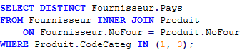 -
Résultat :
Pays Allemagne Australia Australie Brésil Canada Etats Unis Etats-Unis Finlande France Pays-Bas Royaume Uni Royaume-Uni Singapour Suède
-
Question 1c. Mission 3 : Chiffres d’affaires de la catégorie dessert et boisson
-
Construction de requête :
On veut le chiffre d'affaires généré par catégorie desserts ou catégorie boisson.
On sélectionne les tables DetailCommande (prix et quantité) et Produit (code catégorie). Ensuite, on effectue une jointure interne pour combiner les données des commandes avec celles des produits correspondants en utilisant la référence du produit. Puis, on applique un filtre pour ne garder que les produits qui appartiennent à la catégorie des boissons. Enfin, on calcule et affiche le chiffre d'affaires total des boissons en multipliant le prix unitaire par la quantité commandée puis par les remises. Même démarche pour calculer le chiffre d'affaires des Desserts.
-
SQL et Résultats :
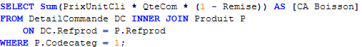 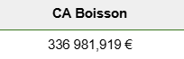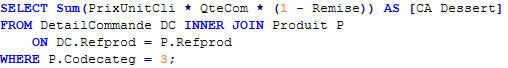 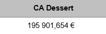
-
Offre kdou:
Question 2b de la mission 3. Combien y a-t-il de produits non commandés par catégorie ?
-
Construction de requête:
La requête SQL est composée de deux parties : une sous-requête et une requête principale. La sous-requête sélectionne tous les identifiants des produits commandés à partir de la table DetailCommande. La requête principale effectue une soustraction entre 'les identifiants de tous les produits qu'ils soient commandés ou non' et 'les identifiants des produits obtenus grâce à la sous-requête'. Elle sélectionne le nom de la catégorie (NomCateg) et utilise la fonction d’agrégation COUNT pour compter les produits par catégorie. Enfin, les résultats sont regroupés par le nom de la catégorie avec GROUP BY C.NomCateg.
-
SQL ET Résultats :
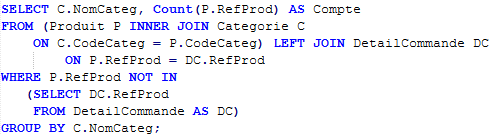NomCateg Compte Boissons 27 Condiments 2 Desserts 3 Pâtes et céréales 2 Poissons et fruits de mer 2
-
Question 2c : Quels sont les pays qui ont une offre importante de produits ?
-
Construction de la requête:
Elle sélectionne le pays de chaque fournisseur et le nombre de produits associés à ce pays. Elle joint les tables Fournisseur et Produit via la colonne NoFour pour relier les fournisseurs à leurs produits. Elle regroupe les résultats par pays de fournisseur, puis elle compte combien de produits chaque fournisseur a dans chaque pays. Ensuite, elle ordonne les résultats par le nombre de produits de manière décroissante. Enfin, elle ne renvoie que les 7 premiers pays avec le plus grand nombre de produits grâce à TOP 7.
-
Voici la liste avec la requête SQL des pays qui fournissent le plus de produit Kdou :
-
SQL et Résultats :
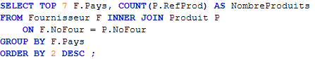Pays NombreProduits Royaume-Uni 18 Allemagne 11 Brésil 8 Canada 8 États-Unis 7 France 6 Australia 6 Japon 6
Provenance des produits
3a. Pour l’Allemagne pays proche, quels sont les desserts ou boissons vendus à moins de 100 euros ?
-
Construction de requête:
FROM Produit P: C'est cette table qui contient les produits.
Puis INNER JOIN Fournisseur F ON P.NoFour = F.NoFour: La jointure entre les tables Produit et Fournisseur est effectuée via la colonne NoFour, qui est une clé de fournisseur.
WHERE F.Pays LIKE 'Allemagne': prend les produits provenant de fournisseurs situés en Allemagne.
Pour le premier AND, la condition limite les résultats aux produits dont le prix unitaire est inférieur à 100.
AND (P.CodeCateg = 1 OR P.CodeCateg = 3): condition filtre les produits selon leur catégorie.
Vous sélectionnez les produits dont le CodeCateg est soit 1, soit 3.
Ainsi elle retourne la référence, le nom, le prix unitaire, et le code de catégorie des produits provenant de fournisseurs en Allemagne, dont le prix est inférieur à 100 et dont la catégorie est soit 1, soit 3.
-
Voici la liste des desserts ou des boissons vendus à moins de 100€ venant des fournisseurs d’Allemagne :
-
SQL ET Résultats :
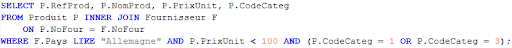RefProd NomProd PrixUnit CodeCateg 25 NuNuCa Nuß-Nougat-Creme 11,67 € 3 26 Gumbär Gummibärchen 26,03 € 3 27 Schoggi Schokolade 36,58 € 3 75 Rhönbräu Klosterbier 86,46 € 1
-
Question 3b : Quels fournisseurs vendent uniquement des boissons ou des desserts ?
-
Construction de requête:
On a besoin tout d’abord de la table fournisseur. Puis, on fait la jointure entre Fournisseur et Produit par l'attribut NoFour (le numéro du fournisseur).
WHERE P.CodeCateg IN (1, 3): prend que les produits dont le CodeCateg est 1 ou 3.
AND F.NoFour NOT IN: Cette condition exclut les fournisseurs qui fournissent des produits dans d'autres catégories que 1 ou 3.
La sous-requête suivante sélectionne les fournisseurs qui fournissent des produits dans des catégories autres que 1 ou 3. Ainsi, la requête principale sélectionne les fournisseurs qui fournissent uniquement des produits dans les catégories 1 ou 3, en excluant ceux qui fournissent aussi des produits dans d'autres catégories. Elle utilise une sous-requête avec NOT IN pour s'assurer que le fournisseur ne fournit pas de produits dans des catégories qui ne sont ni 1 ni 3.
-
Voici la liste des fournisseurs qui vendent uniquement des boissons et des desserts :
-
SQL et Résultats :
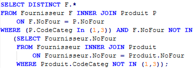NoFour Société Contact 8 Specialty Biscuits, Ltd. Melvin Wilson 10 Refrescos Americanas LTDA Carlos Diaz 11 Heli Süßwaren GmbH & Co. KG Petra Winkler 18 Aux joyeux ecclésiastiques Guylène Nodier 22 Zaanse Snoepfabriek Dirk Luchte 23 Karkki Oy Anne Heikkonen 30 Faro Madeiras Claudio Sole 31 Westpac Corporation Charlie Colley 32 Perdigão Helena Carbo 33 Globalis Bob Rego 34 Losad Hug Jhonson
-
Thème la clientèle
4a. Un client nantais “Le verre à soi” souhaite savoir quels autres clients nantais commandent aussi des produits en Allemagne pour envisager de futures livraisons groupées.
-
Construction de requête:
La requête sélectionne tous les clients qui ne sont pas associés à la société "Verre à soi" et qui sont situés dans la ville Nantes.
INNER JOIN Commande CM ON C.CodeCli = CM.CodeCli: Joindre la table Client à la table Commande via CodeCli, qui relie chaque client à ses commandes.
INNER JOIN DetailCommande DC ON CM.NoCom = DC.NoCom: Joindre la table Commande à la table DetailCommande via NoCom, ce qui permet de lier chaque commande aux détails des produits qu'elle contient.
INNER JOIN Produit P ON DC.RefProd = P.RefProd: Joindre la table DetailCommande à la table Produit via RefProd, ce qui permet de lier chaque produit de la commande aux informations du produit.
INNER JOIN Fournisseur F ON P.NoFour = F.NoFour: Joindre la table Produit à la table Fournisseur via NoFour, ce qui relie chaque produit à son fournisseur.
Puis WHERE F.Pays = 'Allemagne'filtre les fournisseurs pour ne sélectionner que ceux situés en Allemagne.
DISTINCT C.* : permet de s'assurer qu'on n'affiche chaque client qu'une seule fois, même si un client a plusieurs commandes correspondant à ces critères.
Ainsi, cette requête renvoie une liste de clients qui sont situés à Nantes, qui ne sont pas associés à la société "Verre à soi", et qui ont passé des commandes pour des produits fournis par des fournisseurs basés en Allemagne. Les données renvoyées proviennent de la table Client.
-
La société “Le verre à soi” peut envisager de commander avec :
-
SQL ET Résultats :
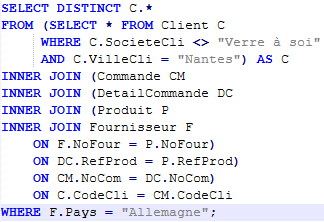CodeCli SociétéCli ContactCli AdresseCli VilleCli CPCli Pays Téléphone COMMI Pedro's house Pedro Afonso 67, rue des Cinquante Otages Nantes 44000 France 06.40.67.88.88 DRACD Table nantaise Sven Ottlieb 54, rue Royale Nantes 44000 France 06.40.32.21.21
-
4c. Certains clients n’ont jamais eu la remise la plus importante de 25%. Qui sont-ils ?
-
Construction de requête:
La requête principale sélectionne les colonnes CodeCli, SocieteCli, et ContactCli de la table Client (alias C).
Elle filtre les clients en excluant ceux dont CodeCli apparaît dans la sous-requête.
Les CodeCli des clients ayant passé des commandes où l'un des produits a une remise de 0.25.
Ensuite, on fait INNER JOIN DetailCommande DC ON Com.NoCom = DC.NoCom: on relie la table Commande (alias Com) à la table DetailCommande (alias DC) via le numéro de commande NoCom.
Puis, WHERE DC.Remige = 0.25 : on filtre les détails des commandes pour ne retenir que celles où la remise sur les produits est de 0.25.
DISTINCT récupère une liste de CodeCli unique, c'est-à-dire que chaque client est inclus une seule fois, même s'il a plusieurs commandes avec une remise de 0.25.
Ainsi la requête renvoie une liste des clients (identifiés par CodeCli) dont la société et le contact sont affichés, mais uniquement ceux qui n'ont pas passé de commande contenant un produit avec une remise de 0.25.
-
Voici la requête SQL et les clients qui n'ont jamais touché une remise de 25% :
-
SQL et Résultats :
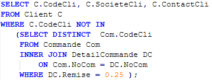CodeCli SociétéCli ContactCli ALYAD Chez Bouxou Alyssa Duranta MAKOU Le marikou Maël Sporto MORJU Les Morainières Julie Kas
Nos indicateurs personnels :
Afshar Mohammed Ajmaldeen
Quelles sont les fournisseurs qui proposent des produits avec remise, mais dont les produits ne viennent pas
d’Allemagne ?
On peut remarquer que dans la base de données, un nombre important de produits viennent d’Allemagne. On se
demande donc que deviendra la base
de données sans les produits allemands. Et pour ajouter une touche dans la requête, on ajoute alors les remises.
Cette requête permettra à Kdou de mieux maximiser leurs bénéfices en se concentrant sur les remises offertes par des fournisseurs. Elle permet aussi de filtrer les fournisseurs (n’ayant pas d’importance, fournissant pas de bons produits, etc… ), ce qui peut être important pour la gestion. Et, elle permettra de mieux gérer les relations fournisseurs.
| NoFour | Société | Contact |
|---|---|---|
| 1 | Exotic Liquids | Alyssa Messata |
| 2 | New Orleans Cajun Delights | Shelley Burke |
| 3 | Grandma Kelly's Homestead | Regina Murphy |
| 4 | Tokyo Traders | Matti Nagase |
| 5 | Cooperativa de Quesos 'Las Cabras' | Maëlo del Valle Saavedra |
| 6 | Mayumi's | Mayumi Ohno |
| 7 | Pavlova, Ltd. | Ian Devling |
| 8 | Specialty Biscuits, Ltd. | Melvin Wilson |
| 9 | PB Knäckebröd AB | Lars Peterson |
| 10 | Refrescos Americanas LTDA | Carlos Diaz |
| 14 | Formaggi Fortini s.r.l. | Elio Rossi |
| 15 | Norske Meierier | Beate Vield |
| 16 | Bigfoot Breweries | Cheryl Saylor |
| 17 | Svensk Sjöföda AB | Mikal Björn |
| 18 | Aux joyeux ecclésiastiques | Guylène Nodier |
| 19 | New England Seafood Cannery | Robb Merchant |
| 20 | Leka Trading | Chandra Leka |
| 21 | Lyngbysild | Alexis Petersen |
| 22 | Zaanse Snoepfabriek | Dirk Luchte |
| 23 | Karkki Oy | Anne Heikkonen |
| 24 | G'day, Mate | Wendy Mackenzie |
| 25 | Ma Maison | Jean-Guy Lauzon |
| 26 | Pasta Buttini s.r.l. | Giovanni Guidotti |
| 27 | Escargots Nouveaux | Joana Delamare |
| 28 | Gai pâturage | Eliane Noz |
| 29 | Forêts d'érables | Chantal Goulet |
Voici la requête SQL qui permet de voir les fournisseurs qui proposent des produits avec remise mais dont les produits ne viennent pas d’Allemagne :
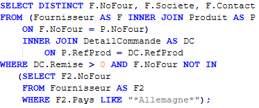Voici comment j’ai conçu la requête SQL ci-dessus:
- Tout d’abord, j’ai créé la sous-requête de sorte à obtenir tous les fournisseurs Allemand.
- Ensuite, j’ai pris la table Fournisseur et j’ai fait une jointure avec la table Produit. Une fois la jointure faite, j’ai refait une autre jointure entre la table Produit et la table DetailCommande.
- Puis, comme on veut les fournisseurs qui proposent des produits avec remise, il faut que les remises soient strictement supérieures à 0. Et comme on ne veut pas que les produits viennent d’Allemagne, il faut prendre tous les NoFour (Numéro Fournisseur) qui ne sont pas dans la sous-requête.
- Enfin, je sélectionne toutes les informations nécessaires du fournisseur c’est-à-dire son NoFour (Numéro Fournisseur), le nom de la société et son contact.
Johann Tixier
Quels sont les produits proposés par des fournisseurs français, qui n’ont jamais été commandés et qui
appartiennent à la catégorie “boissons” ?
On peut voir que dans la base de données il y a peu de fournisseurs français donc pour pouvoir les retrouver plus facilement parmis tous ces pays et plus précisément les fournisseurs français qui proposent des boissons.
| Société | NomProd | NomCateg |
|---|---|---|
| Aux joyeux ecclésiastiques | Côte de Blaye | Boissons |
| Aux joyeux ecclésiastiques | Chartreuse verte | Boissons |
| Globalis | Siropa Fraisea | Boissons |
Cette requête ci-dessous va donc survivre à afficher que les fournisseurs français qui vende des boissons :
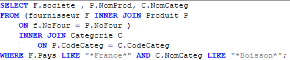La requêtes SQL et donc divisé en deux INNER JOIN contenue dans la commande FROM :
- Le premier permet de joindre la table Fournisseur à la table Produit par la colonne NoFour.
- Le deuxième permet lui de joindre la table Produit à la table Categorie par la colonne
CodeCateg.
Ensuite, j’utilise la commande WHERE pour permettre de trier les information que l’on n’a besoin pour cela on utilisé deux commande LIKE avec une commande AND pour les regrouper entre elle :
- Le premier LIKE sert à choisir seulement les fournisseurs français.
- Le deuxième LIKE permet de choisir uniquement les produits de catégorie “boisson”.
Puis, pour terminer, j’utilise la commande SELECT afin de choisir les colonnes que je sélectionne pour afficher dans la requête, j’ai donc choisi pour cette requête d'utiliser les colonnes Societe de la table Fournisseur, NomProd de la table Produit et NomCateg de la table Catégorie.
Sarah Xu
Quels sont les produits qui ne sont plus en stock mais dont on a acheté en grande quantité ?
Nous cherchons à connaître les produits qui ne sont plus en stock mais qui sont populaires.
Elle permet à KDOU de savoir quels sont les produits qui doivent être réapprovisionnés rapidement car ils ont déjà été achetés en grande quantité donc ils seront potentiellement demandés dans une prochaine commande, dans la commande d’un autre client. KDOU pourra donc faire payer instantanément ces produits aux clients qui souhaitent les acheter dans l’immédiat. L’attente du client sera diminuée, donc cela permettra sa satisfaction.
Résultat:
| RefProd | NOMPRODUITPOPULAIRE | NoFour | PLUSENSTOCK |
|---|---|---|---|
| 29 | Thüringer Rostbratwurst | 12 | 0 |
| 53 | Perth Pasties | 24 | 0 |
On a besoin de la table Produit pour avoir la références du produit, le nom (renommé NOMPRODUITPOPULAIRE), le numéro du fournisseur et la quantité en stock (renommée PLUSENSTOCK). Ces alias sont nommés ainsi pour faciliter la compréhension des valeurs.
On a également besoin de la table DetailCommande pour avoir la quantité commandée et permettre la jointure avec la table Produit par la clé RefProd.
La valeur d’UniteStock doit être égale à 0 car il n’y a pas de stock et la QteCom doit être supérieure à 100 pour être un produit vendu en grande quantité.
Requête finale:
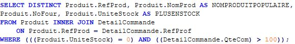
Niloy Chandra
Combien y a-t-il de produits non commandés par catégorie ?
Nous cherchons à connaître le nombre de produits qui n'ont pas encore été achetés, en les regroupant selon leur catégorie.
Cette requête permet à Kdou de cibler ses efforts marketing sur des catégories spécifiques afin d'augmenter les ventes. De plus, elle permet d'identifier les catégories ou produits à mettre en avant avec des remises pour favoriser l'écoulement des stocks. Enfin, elle permet d'ajuster les commandes auprès des fournisseurs, ce qui peut réduire les frais de transport et les dépenses inutiles.
Résultat:
| NomCateg | Compte |
|---|---|
| Boissons | 27 |
| Condiments | 2 |
| Desserts | 3 |
| Pâtes et céréales | 2 |
| Poissons et fruits de mer | 2 |
Notre requête SQL est la combinaison d’une sous requête et une requête principale.
Construction de la sous-requête SELECT :
Avec cette requête, on sélectionne tous les Identifications des produits commandés.
On utilise la table :
- DetailCommande : Cette table enregistre les informations liées à une commande. Plus particulièrement l’identifiant du produit commandé “RefProd”.
On sélectionne :
- La colonne RefProd dans la table DetailCommande.
Construction de la requête principale SELECT :
On utilise la table :
- Produit : Pour avoir les identifiants de tous les produits commandés et non commandés
- Categorie : Pour aficher le nom de catégorie avec la joincture (INNER JOIN).
On séléctionne :
- La colonne NomCateg dans la table Categorie.
- Fonction d'agrégation COUNT pour compter les lignes de la table.
Enfin, on regroupe les nombres de Produit par leur Nom de catégories.